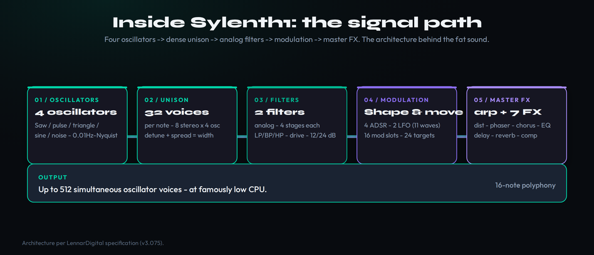
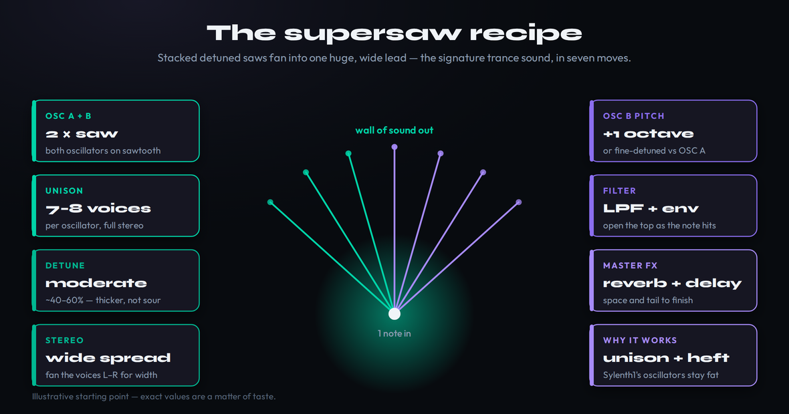
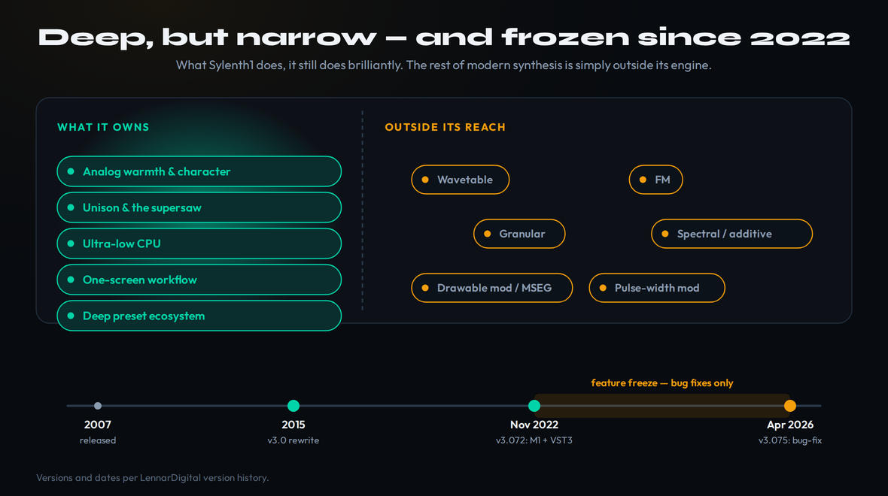

Most writing about Sylenth1 falls into one of two traps. Either it is a 2015-era review that still talks about the synth as a current marvel, frozen at the moment trance producers discovered it, or it is a nostalgia piece that treats buying it in 2026 as a sentimental act — a tip of the hat to the plugin that built a genre. Neither is useful if you are a producer with $149 in your cart and a real decision to make. The honest question is not whether Sylenth1 is good. It plainly is. The question is whether a four-oscillator virtual-analog synth from 2007 is still worth paying for when Vital is free, Serum 2 and Pigments do far more, and the synth itself has not gained a single new sound-design feature since 2022.
Here is the short, defensible answer before the detail. Sylenth1 still earns a place on a producer’s drive for exactly one reason, and it is a good one: fat, CPU-light, analog-style sounds with a workflow you genuinely cannot get lost in. For supersaw leads, rolling basses, and the warm plucks and pads that define trance, EDM, and progressive house, it remains as fast and as flattering as anything you can buy. What it is not is a modern sound-design environment. There is no wavetable engine, no FM, no granular, no spectral editing, no drawable modulation. If the thing you want is breadth and the cutting edge, this is not your synth, and a free download does more. If the thing you want is a reliable instrument that makes a great EDM sound in fifteen seconds and barely touches your CPU, it is still one of the best tools for that job in 2026. That narrower verdict is the whole review.
How we approached this. Every price, version, format, and feature line below was re-verified against LennarDigital’s own store, specifications, and version-history pages this session, alongside current third-party listings and the active producer community — not older reviews, several of which now mis-state the synth’s capabilities. This is a documentation-and-reasoning review, not a first-party listening test: we did not run a controlled blind comparison in our own room, so every judgement about how Sylenth1 sounds is framed as reasoning from its documented architecture and the long, consistent consensus of producers who use it daily — never a fabricated “we A/B’d it and it sounded like” claim. Where a number can drift, such as the price during a sale window, we tell you to confirm it on the live page.
Sylenth1 is a 2007 virtual-analog synthesizer that is still genuinely excellent at one thing: fat, warm, CPU-light leads, basses, plucks and pads, with a one-screen workflow you cannot get lost in. Buy it if you make trance, EDM, or progressive house, want instant analog-style sounds on a modest machine, and dislike menu-diving. Skip it if you want modern sound design — wavetables, FM, granular, deep modulation — or you are on a budget, because Vital gives you more of that for free. At $149 (US street price) it is a fair buy for the producer it is built for, dragged down only by the fact that a free synth now covers the basics and Sylenth1 has not added a feature since 2022. Treat it as a specialist that nails its specialty, not as a do-everything flagship, and it earns its place.
The Verdict
Still one of the fastest ways to a fat, warm, low-CPU EDM sound in 2026 — a specialist that nails its specialty, as long as you are not buying it to do modern sound design it was never built for.
| Sound & analog character | 9.2 | |
| CPU efficiency | 9.6 | |
| Workflow & ease of use | 9.0 | |
| Fitness for trance / EDM (what it’s for) | 9.3 | |
| Modulation & flexibility | 7.0 | |
| Value vs free & modern rivals | 7.6 | |
| Sound-design depth / modern features | 6.2 |
That 8.3 is a defended judgement, not an average, and the spread is the entire argument. Sound and analog character (9.2), CPU efficiency (9.6), workflow (9.0), and fitness for trance and EDM (9.3) are where Sylenth1 still operates at or near the top of the category — nineteen years on, almost nothing gets you a fat, mix-ready supersaw faster or cheaper in CPU. The numbers that pull the overall down are deliberate and honest. Modulation and flexibility (7.0) reflects a competent but conventional mod system in an era of drawable envelopes and modulating-the-modulators. Value versus free and modern rivals (7.6) is the Vital problem: a free synth now covers the fundamentals Sylenth1 charges for. And sound-design depth (6.2) is the honest floor — there is no wavetable, no FM, no granular, no spectral engine here, and there has not been a new synthesis feature since 2022. Score it on what it is for and it is a 9; score it as a modern flagship and it is a 6; the truth, and the buy, sit at 8.3.
What Sylenth1 Is, and Why It Still Matters
Sylenth1 is a virtual-analog (or “analog-modelling”) software synthesizer made by the Dutch developer LennarDigital, first released in 2007 and still sold today. Virtual-analog means it does not sample real hardware and it does not use wavetables; instead it models the behaviour of classic analog oscillators and filters in code, aiming to reproduce the warmth, movement, and slight imperfection that make hardware synths sound alive. When it launched, that was a genuine breakthrough. Most software synths of the mid-2000s sounded thin, brittle, or sterile next to real analog gear. Sylenth1 was one of the first that did not — it sounded, to a lot of trained ears, like it belonged in the same room as the hardware it imitated.
The reason it still matters in 2026 is partly historical and partly practical. Historically, it became the default synth of an entire era of dance music. The supersaw leads of uplifting trance, the rolling reese-adjacent basses of progressive house, the bright stabs and plucks of festival EDM — an enormous share of that sound, across a decade of records, was made or could have been made on Sylenth1. It is widely cited by producers in those genres as a foundational tool, and that reputation is not nostalgia; it is the accumulated result of the synth being fast, consistent, and flattering at precisely the sounds those genres are built from. Practically, none of what made it good has stopped being true. A great-sounding supersaw is still a great-sounding supersaw, and the workflow that let a sixteen-year-old in a bedroom build one in 2011 works identically now.
What you are really buying, then, is a specialist instrument with a deep, narrow competence and a reputation that means presets and tutorials for it are everywhere. That last point is easy to undervalue. Because Sylenth1 was so widely adopted, the ecosystem around it — thousands of free and paid preset banks, a tutorial for every sound you can imagine, producers who can talk you through a patch — is unusually rich. For a beginner especially, that scaffolding can matter more than raw feature count. You are not just buying an engine; you are buying into the most documented corner of the EDM-synth world.
The Engine: Four Oscillators, Real Unison, Analog Character
Under the hood, Sylenth1’s architecture is straightforward to describe and that simplicity is the point. At its core sit four bandlimited unison oscillators, each capable of producing up to eight voices in full stereo — thirty-two oscillator voices per note before you have touched a single effect. With sixteen-note polyphony that adds up to a stated 512 simultaneous oscillator voices, and the oscillators are specified to stay clean and characterful from extremely low frequencies (down to 0.01 Hz and below) all the way up to half the sample rate (our note-to-frequency tool maps any note to its exact pitch in Hz). In plain terms: it can build a wall of detuned sound from a single key, and that wall is exactly what a supersaw lead or a thick analog bass is made of.
The unison engine is the heart of Sylenth1’s identity, and it is worth understanding rather than just twisting. Unison stacks multiple copies of an oscillator and spreads them in pitch; detune controls how far apart those copies sit. A little detune gives gentle chorusing and width; a lot gives the screaming, shimmering thickness of a festival lead. Because Sylenth1 puts eight voices per oscillator and four oscillators on tap, you can stack genuinely dense unison while keeping it in full stereo, and the result is wide and three-dimensional rather than a flat smear. This is the single most important thing the synth does well, and the diagram below traces how that signal is built.

After the oscillators come two analog-modelled filter sections, each built from four filter stages with nonlinear saturation baked in. You get lowpass, bandpass, and highpass modes at 12 dB or 24 dB per octave, and a drive control that pushes each stage into overdrive. The resonance can be turned well past self-oscillation, and combined with drive that is where the filters stop being polite and start to scream — the raw, rubbery, slightly aggressive quality that producers reach for when a sound needs to feel analog rather than digital. If you want to understand what these controls are doing in the abstract, the filter entry in the Bible covers the theory; here, the thing to know is that these are good filters, with character, not the clean clinical filters of a transparent digital synth.
Modulation rounds out the engine, and this is where the honest picture gets more nuanced than either the fans or the critics admit. Sylenth1 gives you four ADSR envelopes (our ADSR visualizer shows how those shape a note), two LFOs with eleven waveforms each, and a sixteen-slot modulation matrix where each slot can target one of twenty-four destinations, alongside velocity, keytrack, and mod-wheel sources. That is a real, usable mod system — more capable than its reputation suggests. What it is not is a modern one. There are no custom-drawn LFO shapes, no multi-stage envelope generators, no modulating a modulator with another modulator, none of the deep, recursive routing that defines current flagships. For the movement trance and EDM actually need — filter sweeps, slow LFO wobble, envelope-shaped plucks — it is entirely sufficient. For experimental or evolving sound design, it runs out of road quickly. As a whole, the engine is a textbook example of well-executed subtractive synthesis: start with rich oscillators, shape with characterful filters, move with modulation, and stop there. Every control on the panel is catalogued in our synthesis parameter reference if you want the full map.
The Supersaw, the Trance Lead, and the Rolling Bass
If Sylenth1 has a signature, it is the supersaw lead. The supersaw — a stack of detuned sawtooth waves that fuse into one huge shimmering tone — traces its lineage to the Roland JP-8000 of the late 1990s, and it became the defining lead sound of uplifting and progressive trance. Sylenth1 did not invent it, but for most of a decade it was the most convenient and best-sounding way to make one in software, and that is still largely true. The recipe is not a secret, and the patch map below lays out the actual settings that get you there.

The bones of it are simple. Take two oscillators set to saw waves, push the unison voice count up, dial in a moderate-to-heavy detune, and spread the voices across the stereo field. Add the second oscillator pitched an octave up or detuned slightly against the first for extra thickness, run the whole thing through a lowpass filter with a touch of envelope so the top end opens as the note hits, and finish with a little reverb and delay from the master effects section. That is a festival-grade lead in under a minute, and the reason it works so reliably on Sylenth1 specifically is the quality of those unison oscillators and the warmth of the filters. The same recipe on a thinner-sounding synth gives you a thinner-sounding lead. If you want the deeper theory of stacking sounds for size, the guide on how to layer synths extends this well beyond a single patch.
The same strengths carry the low end. A rolling trance or progressive bass — the kind that bounces underneath an offbeat rhythm and ducks under the kick — wants warmth, weight, and a little movement, and Sylenth1’s oscillators reach low and stay solid without turning to mud. Plucks and stabs, the bright rhythmic hits that drive a lot of EDM, come just as easily: short envelope, a bit of filter, maybe some unison for width, done. None of these are exotic sounds, and that is exactly the point. Sylenth1 is built to make the bread-and-butter sounds of dance music quickly and well, and the genres it serves — trance, EDM, progressive and electro house, festival and big-room — are precisely the ones built from those sounds. Producers working in EDM and adjacent styles like future bass consistently reach for it for that reason.
CPU and Workflow: The Underrated 2026 Advantages
Two of Sylenth1’s biggest advantages are the ones that do not show up on a feature list, and both have quietly become more relevant over time rather than less. The first is CPU efficiency. Sylenth1 is built on heavily optimized SSE processor code and it automatically powers down any section you are not using, and the practical effect is that it sips CPU even when you stack dense unison across many voices. In an era where producers routinely run thirty, forty, or fifty instances of a synth across a large arrangement, that matters. A modern wavetable flagship sounds spectacular on one track and can bring a session to its knees across forty; Sylenth1 will happily run dozens of instances on a modest or older machine without a stutter. This is a genuine, current advantage, and it is the reason Sylenth1 still appears on lists of the most efficient professional synths — a topic covered in depth in the guide to the best plugins for EDM.
The second advantage is the workflow, and it is the one most easily dismissed as old-fashioned until you have actually lost an afternoon inside a deeper synth. Sylenth1 presents everything on a single screen. Two oscillator sections, two filter sections, the modulation, the effects — it is all visible at once, laid out like a hardware panel, with no menus to dive into and no sub-pages to hunt through. You learn the entire instrument in an hour and then you never think about the interface again; you think about the sound. For a beginner, that lack of overwhelm is the difference between making music and drowning in options. For a professional, it is speed — the ability to go from an idea to a finished patch without friction. There is a real argument, and many working producers make it, that constraints like these are a feature, not a limitation: a smaller, well-chosen set of controls you fully understand will often get you to a usable sound faster than an unlimited modular canvas you have to design from scratch every time.
It is worth correcting one stale criticism here, because it appears in older reviews and is simply no longer true. Sylenth1’s interface has been resizable to any size since the version 3.0 rewrite, with high-resolution skins for high-DPI and Retina displays and seven skins to choose from. The “you can’t scale the tiny UI” complaint described a version of the synth that has not existed for a decade. The interface is dated in style — it looks like a 2007 hardware panel, because that is the aesthetic it was going for — but it scales cleanly and reads fine on a modern monitor.
Where Sylenth1 Has Been Lapped
Honesty requires the other column, and it is a real one. The synthesis world moved on, and Sylenth1 largely did not move with it. The clearest way to see the gap is to put what it does next to what a modern flagship does, which is what the comparison below sets out.

Start with synthesis type. Sylenth1 is virtual-analog and nothing else. There is no wavetable engine, so you cannot scan through evolving timbres the way you can on Serum or Vital. There is no FM, no granular, no physical modelling, no spectral or additive synthesis. The whole modern vocabulary of sound design — the morphing, glitching, textural, evolving sounds that define a lot of current electronic music — is simply outside what this engine can make. That is not a flaw so much as a scope: it does subtractive virtual-analog and it does it beautifully, but if your music lives anywhere near the cutting edge of sound design, you will hit the wall fast.
Then there is modulation depth, which we have already touched on. The sixteen-slot matrix is fine for conventional movement and inadequate for the recursive, drawable, deeply-routed modulation that current synths treat as table stakes. There is no MSEG, no custom LFO drawing, no modulating a modulator. There is also one specific, long-standing omission worth naming because experienced synthesists will notice it: Sylenth1 has no pulse-width modulation. For a virtual-analog synth that is a genuine gap, and the usual workaround is to lean on the unison voices for the movement PWM would otherwise provide.
The most important limitation, though, is not a missing feature — it is the development cadence, and it is the single fact that most justifies hesitation in 2026. The current version is 3.075, released in April 2026, but that update and the one before it are bug-fixes only: Windows 11 compatibility, preset-loading fixes, AAX problems, automation glitches. The last release that added real capability was version 3.072 in November 2022, which brought native Apple Silicon support and a VST3 version. That means Sylenth1 has gone roughly three and a half years without a new sound-design feature. It is being maintained — it runs natively on modern systems and it is not abandonware — but it is plainly in maintenance mode, not active development. You are buying a finished, frozen instrument. For some buyers that stability is reassuring; for others, paying $149 for a synth that will almost certainly never gain a feature is the deal-breaker, and both reactions are reasonable.
Sylenth1 vs Vital vs Serum 2 vs Spire
No 2026 buying decision about Sylenth1 makes sense in isolation, because the entire question is “versus what,” and there are three rivals that matter.
Versus Vital. This is the comparison that decides most purchases, and it is the hardest one for Sylenth1. Vital is a modern wavetable synth that is free at its base tier, with a visual, drawable, deeply-routable modulation system that is everything Sylenth1’s is not. It is cleaner and more flexible, it does wavetable sounds Sylenth1 cannot, and it costs nothing to start. For a producer on a budget, or anyone whose priority is modern sound design, Vital is the rational default and it is hard to argue otherwise. What Sylenth1 still offers against it is the specific analog warmth and the instant-gratification workflow — some producers simply prefer the sound and the speed — but “free and does more” is a heavy thumb on the scale, and it is the main reason Sylenth1’s value score sits where it does.
Versus Serum 2. Serum 2 is the industry-standard wavetable synth, deeper and far more capable than Sylenth1 across almost every axis of sound design, and correspondingly more expensive and heavier on CPU. The head-to-head most buyers actually run is Serum versus Vital, covered directly in the Serum 2 vs Vital comparison; against either of them, Sylenth1 competes not on depth but on focus. It does less, on purpose, faster, and lighter. If you want the most powerful tool, it is Serum; if you want the quickest path to a specific kind of fat analog sound with no CPU cost, Sylenth1 still holds its lane.
Versus Spire. Reveal Sound’s Spire is Sylenth1’s closest direct rival — another synth beloved in trance and EDM for big, modern, ready-to-go leads and basses, reviewed in full in our Spire review. Spire is arguably more contemporary-sounding out of the box and has a more flexible architecture, while Sylenth1 counters with lower CPU, a simpler workflow, and that specific warmth. Between the two it is genuinely a matter of taste and which preset libraries you prefer. For the broader field of options, the roundups of the best synth plugins and the best polyphonic synthesizers place all four in context, and the Massive review covers another classic in the same lineage. If you are still unsure what category of instrument you are even shopping for, the primer on what a synthesizer is is the place to start, and our synthesis-type selector can match an engine to the sound you are chasing.
Who Should Buy Sylenth1, and Who Should Not
Buy Sylenth1 if you make trance, EDM, progressive house, or any style built on fat analog-style leads and basses, and you want the fastest, most flattering, lowest-CPU way to make those specific sounds. Buy it if you value a workflow you can master in an hour and never fight again, if you work on a modest or older machine where CPU headroom is precious, or if you want to plug into the deepest preset-and-tutorial ecosystem in the EDM-synth world. For that producer, Sylenth1 is not a nostalgic purchase — it is a sharp, current tool that does its job better than most of the things that supposedly replaced it.
Do not buy Sylenth1 if your priority is modern sound design — wavetables, FM, granular, evolving textures — because the engine cannot make those sounds and a free download can. Do not buy it if you are on a tight budget, because Vital gives you more for nothing. And do not buy it if you need a synth that is actively evolving, because this one is finished. None of these are knocks on the synth’s quality; they are simply mismatches between what it is and what you might need. The worst outcome is buying Sylenth1 expecting a do-everything flagship and feeling cheated when it turns out to be a specialist. Buy the specialist for its specialty and it is excellent; buy it to be something it never was and it will disappoint you.
Price and Value
Sylenth1’s pricing has a wrinkle worth getting right, because the number you see depends on where you look. Direct from LennarDigital, the full version is listed at €139 excluding VAT, with an unusual payment-plan option that lets you pay it off in monthly installments of €9.95 and keep the license once the balance is reached. Through US resellers and affiliate storefronts, the price is consistently $149. Either way you are buying a perpetual license — you own it, with activations for two computers (Mac and PC), free updates, and the full library of 2,500-plus presets included. There is no subscription trap here; the one-time cost is the cost. Confirm the current figure on the vendor or retailer page before you buy, since sale windows do move the number.
Is $149 fair? For what the synth is, yes — with the honest asterisk that has run through this whole review. Judged purely as an instrument for making fat analog EDM sounds, it is worth the money; the sound quality, the CPU efficiency, the workflow, and the ecosystem all justify the price for the right producer. The asterisk is that a free synth now does the fundamentals, so the value question is really whether Sylenth1’s specific strengths — the warmth, the speed, the lightness, the preset depth — are worth $149 to you over a capable free alternative. For a working trance or EDM producer who will use it on record after record, that is an easy yes. For a hobbyist exploring synthesis broadly, or anyone on a budget, the free route is the smarter first move, and Sylenth1 can wait until you know you want exactly what it does.
Try It Before You Commit
LennarDigital offers a demo version, and the smartest way to make this decision is to spend twenty minutes with it before you spend a dollar. Three quick exercises will tell you almost everything you need to know.
- Open the demo, set both oscillators to saw, and push the unison voice count up on each.
- Dial in a moderate detune and spread the voices wide across the stereo field, then open a lowpass filter with a touch of envelope.
- Time how long it took you to get a lead you would actually use. That speed is the core of what you are buying.
- Duplicate that supersaw patch across ten, then twenty, then thirty tracks in your DAW.
- Watch the CPU meter, then do the same with ten instances of whatever flagship synth you already own.
- The gap you see is the practical meaning of “CPU-light” — and most of the argument for keeping Sylenth1 around.
- Attempt an evolving, wavetable-style or granular-textured sound — the kind you hear in current experimental electronic music.
- Note exactly where the engine stops you: no wavetable scanning, no FM, no drawable modulation.
- Feeling that wall is the honest test of whether Sylenth1’s scope matches the music you actually want to make.
The Verdict
Sylenth1 in 2026 is a specialist that still does its specialty as well as almost anything you can buy. For fat, warm, CPU-light leads, basses, plucks and pads — the building blocks of trance, EDM, and progressive house — it remains fast, flattering, and reliable, with a workflow you master in an hour and a preset-and-tutorial ecosystem nothing else in its lane can match. At an 8.3 it earns a clear recommendation for the producer it is built for. The points it gives up are honest ones: there is no modern sound design here, no wavetable or FM or granular, a conventional mod system, no PWM, and no new feature since 2022 — and a free synth now covers the fundamentals it charges for. Go in wanting a sharp, focused instrument that nails a specific sound, and Sylenth1 is excellent and worth the money. Go in wanting a do-everything flagship for the cutting edge, and you will be the one writing the “it’s dated” review. It is not dated. It is finished — and for the right job, finished is exactly enough.